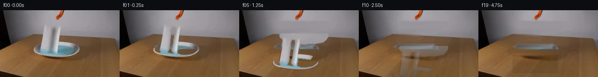

![首帧]()

Round 00
2026-11-06T03:09:22.814771+00:00像素候选变化代码 +327/−0inspection 更新
pixels 8be97954973082c0 · code c5abea7c646a4201
查看本轮 generate.py 真实 diff
--- previous/generate.py
+++ current/generate.py
@@ -0,0 +1,327 @@
+#!/usr/bin/env python3
+"""generate.py — 20-frame animation of grabber releasing paper towel into liquid.
+
+Scene: A realistic scientific demonstration. An orange-black grabber tool holds a
+piece of paper towel over a dish filled with light blue liquid. The grabber releases
+the paper towel, which falls into the liquid and absorbs it.
+
+Method:
+ 1. Extract the paper towel as a masked layer from the reference frame.
+ 2. Inpaint the background behind the towel using row-wise colour extrapolation
+ from the left/right edges of the towel region. This produces a "clean plate".
+ 3. For frames 1–2, animate the grabber claw opening by blending a small gap at
+ the grip point (left edge of towel) with inpainted background.
+ 4. For frames 2–7, translate the towel layer downward under free-fall physics.
+ 5. For frames 7–14, apply liquid-absorption effects: darken, add blue tint,
+ soften edges, and fade opacity as the towel submerges and dissolves.
+ 6. For frames 15–19, show the final settled state with no towel visible.
+ - Frame 00 is always the unmodified first_frame.png.
+"""
+
+import numpy as np
+from PIL import Image, ImageFilter
+from pathlib import Path
+import sys
+
+# ---------------------------------------------------------------------------
+# Paths
+# ---------------------------------------------------------------------------
+CASE_DIR = Path(__file__).resolve().parent
+FIRST_FRAME = CASE_DIR / "first_frame.png"
+
+H, W = 144, 256
+N_FRAMES = 20
+FPS = 4
+
+# ---------------------------------------------------------------------------
+# Load reference frame
+# ---------------------------------------------------------------------------
+ref = np.array(Image.open(FIRST_FRAME).convert("RGB"), dtype=np.uint8)
+assert ref.shape == (H, W, 3), f"Expected (144,256,3), got {ref.shape}"
+
+# ---------------------------------------------------------------------------
+# 1 — Paper towel mask
+# ---------------------------------------------------------------------------
+# The towel is bright white/gray against a darker background.
+# Use a liberal threshold then refine with morphological cleanup.
+brightness = ref.astype(np.float32).mean(axis=2)
+# towel is significantly brighter than surroundings in rows 30–99
+towel_mask = np.zeros((H, W), dtype=bool)
+
+# Column‑adaptive thresholding: in each column, find the bright ridge.
+for x in range(W):
+ col_bright = brightness[:, x]
+ # The towel region has brightness well above the local background
+ # Background wall ~155, paper ~180+; threshold at 155 for soft edge capture
+ towel_mask[:, x] = col_bright > 155
+
+# Restrict to the plausible towel rows (it cannot extend beyond y=99)
+towel_mask[100:, :] = False
+towel_mask[:25, :] = False
+
+# Connected‑component: keep only the largest contiguous blob
+from scipy import ndimage
+labeled, n_labels = ndimage.label(towel_mask)
+if n_labels > 0:
+ sizes = ndimage.sum(towel_mask, labeled, range(1, n_labels + 1))
+ largest = np.argmax(sizes) + 1
+ towel_mask = (labeled == largest)
+
+# Slightly dilate to capture soft edges
+towel_mask = ndimage.binary_dilation(towel_mask, iterations=2)
+
+# Compute bounding box
+t_ys, t_xs = np.where(towel_mask)
+TOWEL_Y0, TOWEL_Y1 = t_ys.min(), t_ys.max()
+TOWEL_X0, TOWEL_X1 = t_xs.min(), t_xs.max()
+TOWEL_H = TOWEL_Y1 - TOWEL_Y0 + 1
+TOWEL_W = TOWEL_X1 - TOWEL_X0 + 1
+print(f"Towel bounding box: x=[{TOWEL_X0},{TOWEL_X1}] y=[{TOWEL_Y0},{TOWEL_Y1}] "
+ f"({TOWEL_W}x{TOWEL_H})", flush=True)
+
+# ---------------------------------------------------------------------------
+# 2 — Clean‑plate background (inpaint behind towel)
+# ---------------------------------------------------------------------------
+clean = ref.copy()
+
+# Row‑wise horizontal colour extrapolation: for each row that intersects
… diff truncated; 240 more lines …